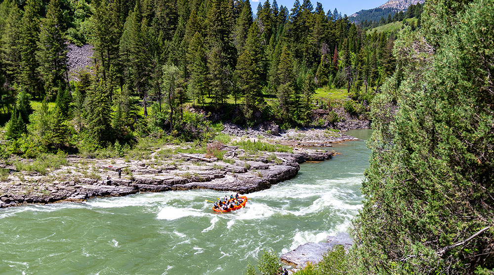

Extreme River Rafting
History
Established in 1998, Extreme River Rafting has a rich history rooted in a love for adventure and exploration. From humble beginnings as a small group of passionate rafting enthusiasts, we have grown into a leading name in the industry, offering thrilling experiences for adrenaline junkies and nature lovers alike. Over the years, we have built a reputation for excellence, combining expert knowledge, state-of-the-art equipment, and a deep respect for the environment.
Our commitment to safety, customer satisfaction, and preserving the natural beauty of the rivers we traverse has propelled us to become a trusted choice for those seeking unforgettable rafting adventures. Join us as we continue to write our legacy, one wild ride at a time.
Adventure Awaits You